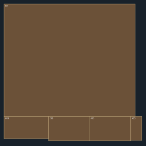
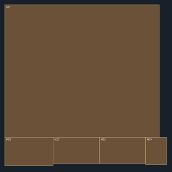
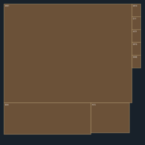
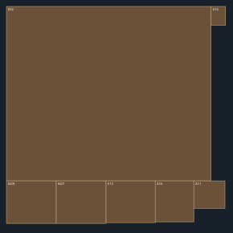
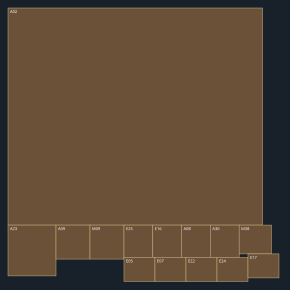
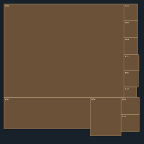
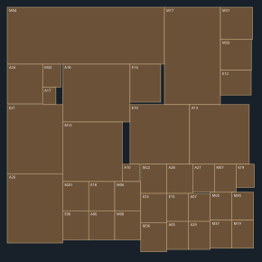
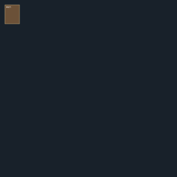
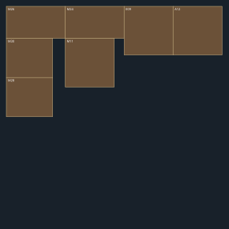

Not sliced. Review orientation, supports, bed exclusions and clips. One material per plate; no scaling. Print by layer, not sequential objects. Boxes show reserved bounding footprints, not supports.








